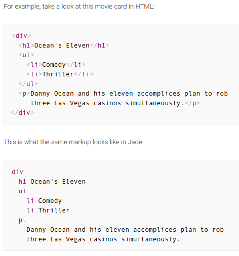

2017/03/02 - Nodejs -> Express-generator, Express , MogoDB , Session , and Jade¶
Express-generator¶
Express-generator can build a web project quickly.
$npm install express-generator
Then we can use express to build a project.
$express Note-taking-system
{kind=link}
Express [1]¶
Express is a minimal and flexible Node.js web application framework that provides a robust set of features to develop web and mobile applications. It facilitates the rapid development of Node based Web applications.
Features:
- Allows to set up middlewares to respond to HTTP Requests.
- Defines a routing table which is used to perform different actions based on HTTP Method and URL.
- Allows to dynamically render HTML Pages based on passing arguments to templates.
MongoDB¶
NoSQL database.
Store data in JSON format.
In Node.js, we need mongoose module to access MongoDB.
Session [2]¶
Two type of session : (Database) Session and Cookie-based Session.
Database Session :
- Store their data server side.
- One of your web servers handles the first request, other web servers in your cluster will not have the stored information.
- Data doesn’t have to travel from client to server on each request (clients just need to send an ID and the data is loaded from the local file).
- Can be any size.
Cookie-based Session :
- Store their data on the client/user end
- Work smoothly when you have a cluster of web servers.
- Cookies can be set to a long lifespan, which means that data stored in a cookie can be stored for months if not years (Users can clear cookies though).
- Browsers typically limit cookies to a maximum size of around 4KB per domain.
Jade [3]¶
Jade is an elegant templating engine, primarily used for server-side templating in Nodejs. In plain words, Jade gives you a powerful new way to write markup, with a number of advantages over plain HTML.
{kind=link}
Summary¶
I use these module in Nodejs to build the Note-taking system project. I try to use express-generator module because I want to learn about the concept of MVC(Model-View-Controller). MVC separates every module clearly , this may help me to maintain this system easily and efficiently in the future.